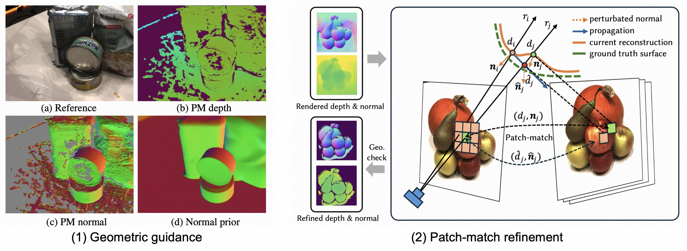
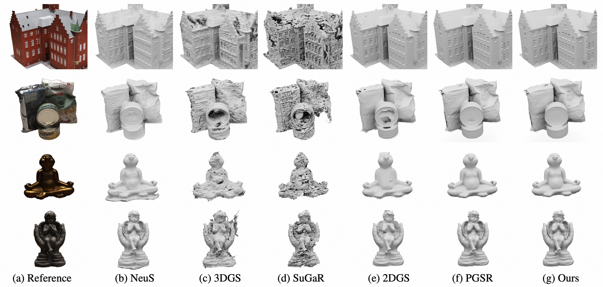
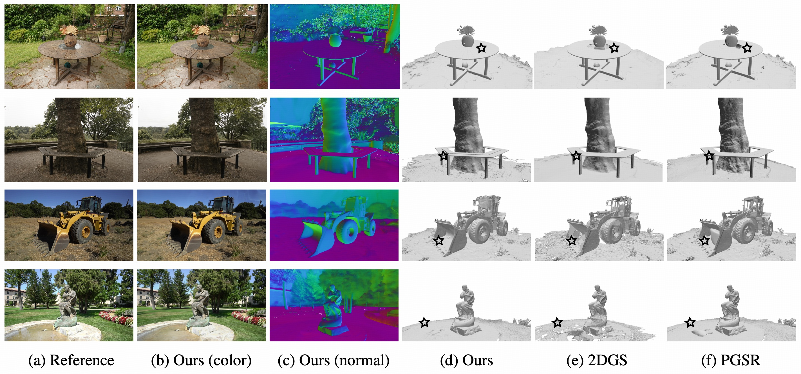

GaussFiller: Unleashing VLM-Expert Guidance for 3D Scene Completion with 3D Gaussian Splatting


Abstract

Due to unavoidable view constraints and occlusions during capture, achieving visually complete scene reconstruction has always been a challenging task. We introduce GaussFiller, a novel framework designed for complete 3D scene reconstruction from sparse RGB-D inputs. Unlike existing mesh-based representations, our approach uses 3D Gaussian Splatting (3DGS), a more flexible and efficient representation, for scene reconstruction. We argue that the scene completion problem involves complex semantic and visual reasoning processes. Therefore, we effectively leverage the powerful reasoning capabilities of Vision Language Models (VLMs) as expert guidance through two novel mechanisms. First, given an incomplete 3DGS scene, we propose a Global-Local Alignment strategy to select the optimal completion viewpoints. This strategy utilizes the semantic reasoning ability of VLMs to analyze contextual relationships between the target scene and potential candidate views, providing semantic feedback. Second, after completing the selected views, we introduce a VLM-Coherence Test-Time Scaling module, which integrates a context-similarity-based selection strategy to identify the single best-inpainted result that exhibits the highest semantic coherence. Experiments indicate that our method can reconstruct plausible and visually satisfying complete 3D scenes from limited RGB-D data, offering significant benefits for downstream applications such as interior design and decoration.">
Introduction

In this paper, we present a new 3D Gaussian Surface based method, GausSurf, for efficient and high-quality multiview surface reconstruction with geometric gauidance (1) from patch-match and normal priors. For texture-rich areas, we utilize multi-view consistency constraints to guide the optimization process. For texture-less regions, we incorporate normal priors from a pretrained model to provide supplementary supervision signals. By effectively integrating these geometric priors, our method achieves both high-quality and efficient surface reconstruction.
Reconstruction results on DTU
In this part, we show our model's reconstruction results and comparisons on the DTU dataset.

Our reconstruction results on all the scenes:
Reconstruction results on TnT and Mip-NeRF360
In this part, we show our model's reconstruction results and comparisons on the Tanks and Temples dataset and Mip-NeRF360 dataset.

Our reconstruction results on Mip-NeRF360, each frame shows the rendered RGB, depth, normal from Gaussians and rendered mesh:
Our reconstruction results on TnT:
Citation
@article{wang2024GausSurf,
title={GausSurf: Geometry-Guided 3D Gaussian Splatting for Surface Reconstruction},
author={Wang, Jiepeng and Liu, Yuan and Wang, Peng and Lin, Cheng and Hou, Junhui and Li, Xin and Komura, Taku and Wang, Wenping},
journal={arXiv preprint arXiv:2411.19454},
year={2024}
}
This page is Zotero translator friendly. Page last updated